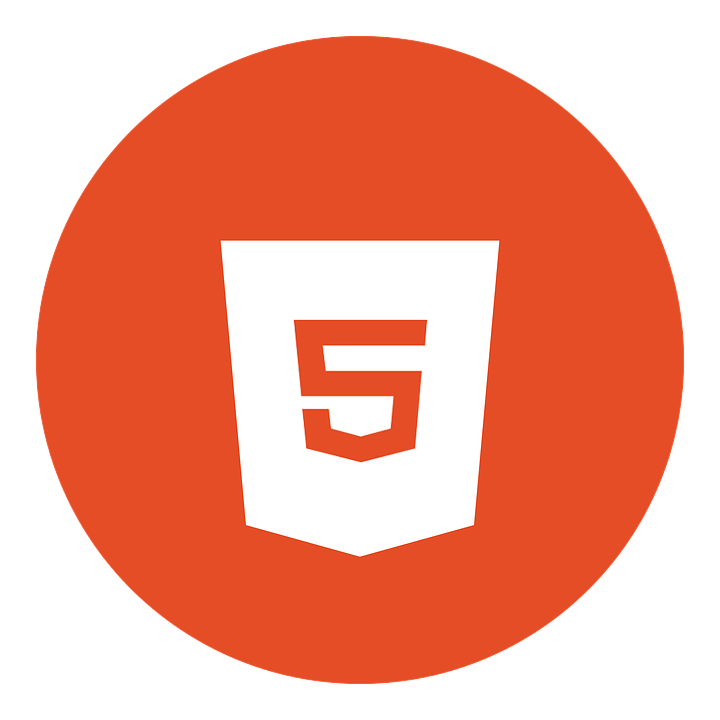
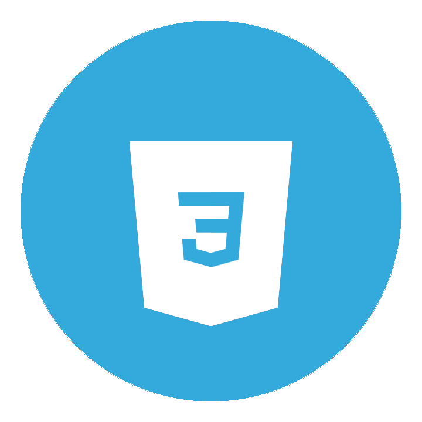
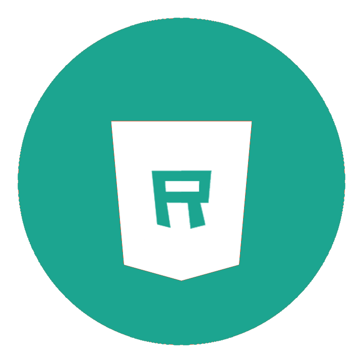

MY SKILLS




My Resume for Bootcamp
您好，我是王藝學。畢業於輔仁大學企管系，曾於紐西蘭遊學半年，目前任職於英文補教業。個性細心謹慎、熱愛思考、自我要求高、富創造力。針對問題習慣先分析再著手進行，重視邏輯是否合理順暢，對於未知領域會盡量理解才有踏實感。面對問題時會先嘗試自行解決，萬不得已才會請教他人。協作時配合度高，注重團隊整體氣氛，能快速提取重點、接納各類意見，透過團隊合作激發靈感。
大學時因興趣自學網頁設計，認為將基礎元素有條理地組建成一個網頁是非常有成就感的，也享受絞盡腦汁解決問題的暢快淋漓。曾投遞過IBM的學生實習前端工程師計畫，第一次接觸程式語言的過程非常有趣。 畢業後，考量到非本科且不清楚程式設計工作所需的技術力，因此便投入商業、英文相關的職場。但任職於補教業約兩年，發現自己不喜歡繁雜的行政工作，想培養一個較實際的「專業技能」，結合過往的經歷、興趣及本身個性而選擇工程師，並期許藉程式設計磨練邏輯，帶著成就感及熱情不斷進步。
自十月初有轉職的念頭後，已購買線上課程及透過Youtube的免費資源，利用下班的閒暇時間自學Python，為了較好的開發環境嘗試使用Linux作業系統，目前還在熟悉基本操作。藉由編寫一些小程式已掌握一定程度的基礎語法，並購入《白話演算法》一書，學習常用的演算法以奠定基礎，接下來則會學習資料結構繼續補足非本科的弱勢。 假日時，也會請教工程師朋友相關的知識，例如網路如何運作、VPN的原理、使用Docker隔離開發環境與作業系統、爬蟲與反爬蟲的基本概念，並使用XPath編寫簡單的爬蟲等等。前日看了十月底的校友分享直播後，又再複習前端的HTML、CSS，若有機會報名成功，接下來的時間則會摸索JavaScript、Flask，希望能在十二月開課前做好一定程度的準備。
因計畫為期半年，且訓練密集，第一階段會先與主管討論將工作調整為兼職，利用下班及假日時間學習，每周約34小時，若在前兩周發現無法專注學習，則會考慮辭職。 全職投入訓練營的情況下，預計平日12小時，在下午及半夜靈感最好的狀態學習與開發；週六學習8小時，稍作喘息；週日約14小時，除原本學習時間，額外準備開會內容與總結當週學習進度。
第一點可能是計概相關知識，例如電腦是如何處理資料的、網路協定是什麼等等，針對此部分，我會記錄不懂的部分並尋找資料，再以自己的理解做圖像化筆記。 第二點則是常見的程式不如預期般順利運行，當下我會盡量檢查是否有語法、邏輯、排版錯誤，並搜尋相關資料。若仍無法除錯，我會先處理其他事情或放空，等有靈感時再回頭嘗試，萬不得已才會請教他人。 第三點則為心理壓力，半年時間無工作收入多少會讓家人不諒解與存疑，自已也容易有焦慮感，這時我會和家人分享學習進度，同時檢視我一路以來的進步。並在每週六進行休閒活動或放空紓壓。經濟部分則以長期投資存股為主，且盡量克制消費欲望減少開銷。
目前還沒有特定想要進入哪家軟體公司，待未來第二、三階段後再考慮，但目標會放在跨國企業，如此還能善用英文的第二優勢。
偶然看到這個訓練營的資訊，以實務專案、職涯考量、同儕協作的方向進行訓練完全符合我的需求，不論最後有沒有錄取成功，都希望你們可以繼續類似的計畫幫助非本科但對程式設計有興趣的人、培養更多人才，謝謝您的撥冗閱讀！

a5354555 (hvvu2)
s5354555@gmail.com
0926-745919